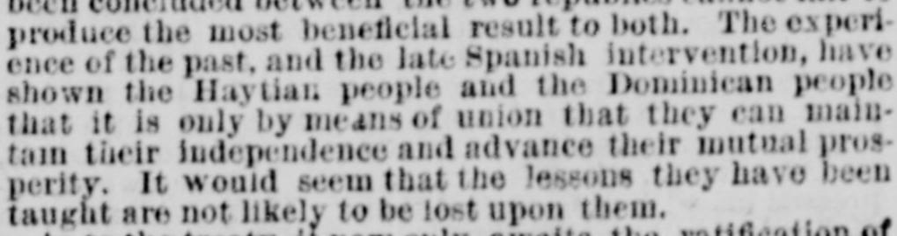
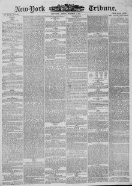

See the full pageVer la página completaEnce of the past, and the late Spanish intervention, have shownLa experiencia del pasado, y la reciente intervención española, han mostrado
According to the New-York Tribune on October 4, 1867, the peoples of Hayti and the Dominican Republic recognized that union was necessary to maintain their independence and prosperity, following past experience and Spanish intervention. A treaty—awaiting only the ratification of the Dominican Congress—had its preliminaries signed six days after the arrival of six delegates sent by President Balnave, amidst great enthusiasm from the government and people. The treaty's articles provided for the suppression of frontier brigandage and the extradition of political refugees, a commitment by both parties to preserve the inviolability of their respective territories (ruling out any United States purchase of the Bay of Samaná), and the settlement of claims arising from injuries sustained during the 1844 separation.Según el New-York Tribune del 4 de octubre de 1867, los pueblos de Haití y de la República Dominicana reconocieron la imperiosa necesidad de la unión para preservar su independencia y prosperidad tras las lecciones del pasado y la intervención española. Se firmaron las bases de un tratado —pendiente solo de la ratificación del Congreso dominicano— a los seis días del arribo de seis delegados comisionados por el presidente Salnave, en medio del fervor popular y oficial. Los artículos del convenio pactaban la represión del bandolerismo fronterizo y la extradición de asilados políticos, el solemne compromiso de ambas partes de salvaguardar la inviolabilidad de sus territorios respectivos (descartando cualquier adquisición estadounidense de la bahía de Samaná) y la indemnización de reclamaciones por perjuicios sufridos durante la separación de 1844.
FULL TEXT:TRADUCCIÓN:
produce the most beneficial result to both. The experience of the past, and the late Spanish intervention, have shown the Haytian people and the Dominican people that it is only by means of union that they can maintain their independence and advance their mutual prosperity. It would seem that the lessons they have been taught are not likely to be lost upon them.producir el resultado más beneficioso para ambos. La experiencia del pasado, y la reciente intervención española, han mostrado al pueblo haitiano y al pueblo dominicano que solo por medio de la unión pueden mantener su independencia y adelantar su prosperidad mutua. Parecería que las lecciones que se les han enseñado no es probable que se pierdan para ellos.
New-York Tribune. New York, October 4, 1867.
See the original at the Library of CongressVer el original en la Biblioteca del Congreso
Published by: New York Tribune, 1866-1924.Publicado por: New York Tribune, 1866-1924.
Edition: Edition 1Edición: edición 1
Page: 1Página: 1
Frequency: daily (1866–1924)Frecuencia: diario (1866–1924)
Collection: Chronicling America, Library of CongressColección: Chronicling America, de la Biblioteca del Congreso
LCCN: sn83030214LCCN: sn83030214
ISSN: 1941-0646ISSN: 1941-0646
OCLC: 9405688OCLC: 9405688
Rights: public domain, according to the Library of CongressDerechos: dominio público, según la Biblioteca del Congreso